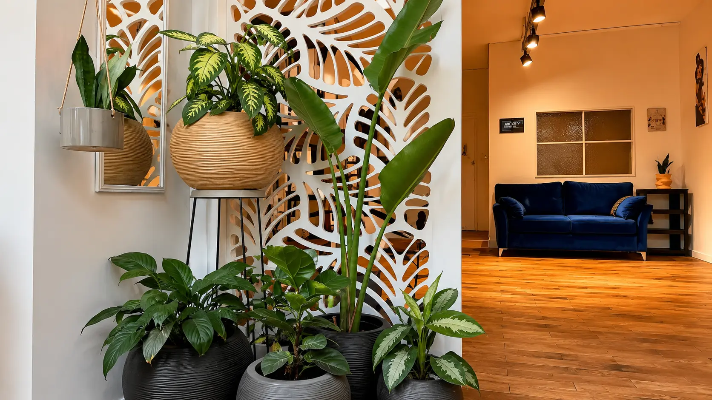
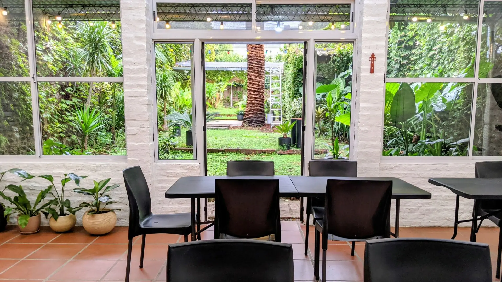
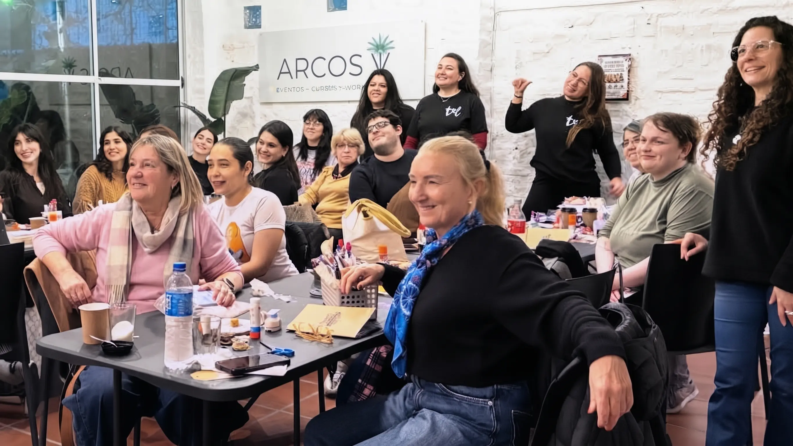
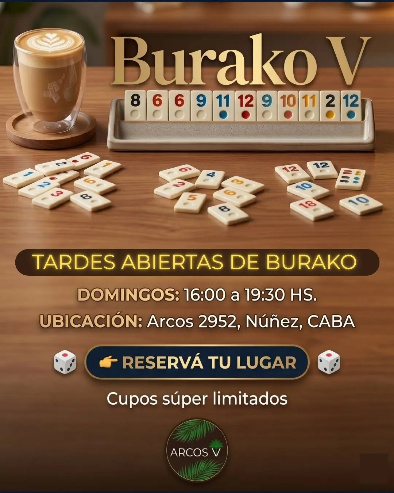
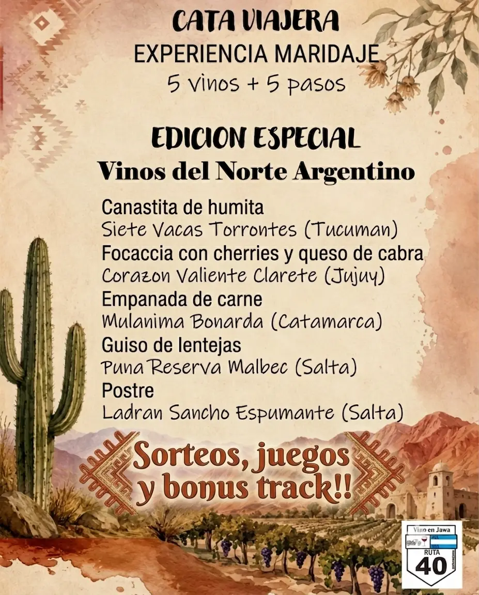
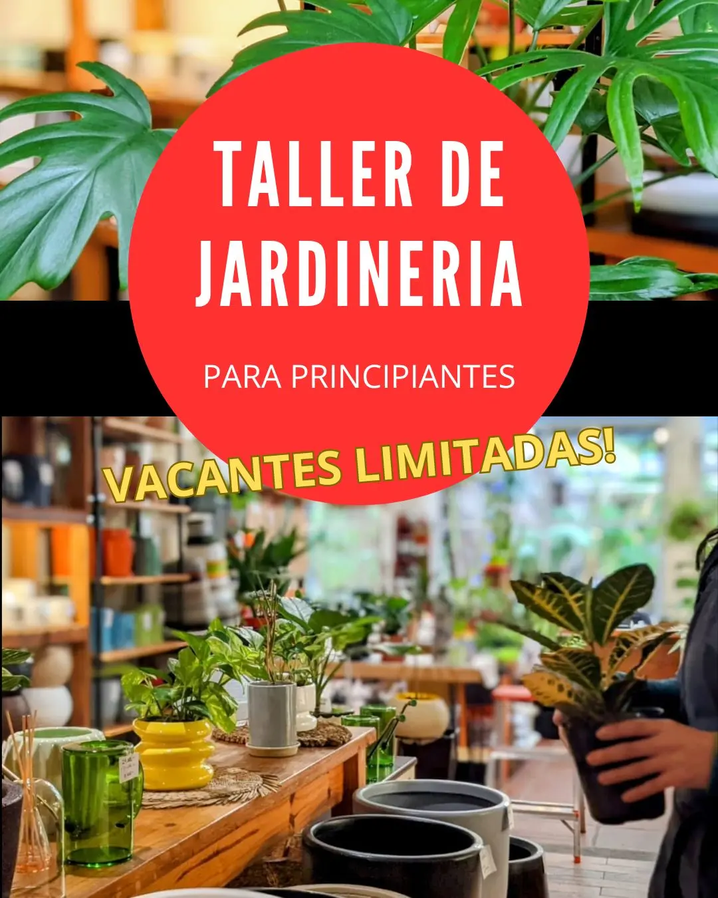

Espacio boutique con jardín para talleres, catas y encuentros.
En Núñez. Para marcas, especialistas y comunidades que crean experiencias presenciales.
Explorá la grilla de actividades y sumate al club.

Sábado 18 de julio.

Domingo 11 de julio.

Sábado 25 de julio.

Domingo 26 de julio.

Sábado 8 de agosto.
Un espacio boutique en Núñez donde especialistas, marcas y comunidades crean talleres, catas, encuentros y experiencias presenciales.
El punto donde el diseño boutique se encuentra con tu proyecto.
Arcos V es un refugio a puertas cerradas diseñado estratégicamente para dictar tus talleres, lanzar productos, armar reuniones de equipo o dictar cursos en un entorno premium y estimulante.
📍 Ubicación estratégica en Núñez, CABA.
🌿 Jardín e interiores con luz natural.
Setup flexible para capacitación, catas o living.
"Excelente ambiente. Muy buena predisposición de las chicas. Es excelente si buscan un lugar al aire libre…"
María José
"Hermoso lugar para realizar eventos. Muy atentas las chicas a lo que necesitábamos nosotras y también excelente atención la gente que asistió, ya estamos coordinando para repetir…"
Sol Giaccone — Local Guide, Google
Ubicación: Arcos 2952, Núñez, CABA.


Historias y detrás de escena de Arcos V.
Despejá tus dudas sobre cómo sumarte o cómo organizar tu propuesta.
Arcos V es un espacio boutique en Núñez donde especialistas, marcas y comunidades organizan talleres, catas, encuentros y experiencias presenciales.
Podés inscribirte directamente en los encuentros publicados en nuestra agenda o sumarte a nuestra lista de difusión de WhatsApp para enterarte de las próximas fechas.
Vas a encontrar talleres prácticos, charlas, catas de vino, encuentros de networking, actividades recreativas, propuestas de bienestar y experiencias gastronómicas.
No, el espacio funciona bajo un formato abierto. Cada taller o experiencia tiene su propia modalidad de inscripción independiente, permitiéndote venir a las actividades que más te gusten.
Estamos ubicados en Arcos 2952 (CP 1429), en el barrio de Núñez, Ciudad Autónoma de Buenos Aires. Es una zona de excelente accesibilidad tanto desde el centro como desde Zona Norte.
Sí. Arcos V recibe con entusiasmo propuestas de especialistas, marcas, empresas y comunidades independientes que busquen un entorno premium y estimulante para desarrollar experiencias presenciales de formato cuidado.
No. Nuestro espacio está pensado de manera exclusiva para talleres, experiencias, encuentros corporativos, actividades gastronómicas, propuestas culturales y presentaciones de marca alineadas con el espíritu y la estética del lugar. No alquilamos para fiestas sociales tradicionales o eventos masivos.
Ofrecemos 100 m² de superficie cubierta distribuidos en un layout integrado en L (Recepción de 22 m², Bar de 20,5 m² y Sala Taller principal de 35,5 m²) que garantiza una circulación interna fluida. Además, incluye un destacado jardín privado parquizado de 257 m².
El valor incluye climatización integral (frío/calor), monitor de 55" para presentaciones, torre de sonido/parlante y Wi-Fi de alta velocidad. En cuanto a mobiliario, disponemos de 22 sillas operativas, 4 mesas de 1,80 m y 2 mesas de 60 cm, adaptables a formatos tipo auditorio, mesas de trabajo o en U.
Totalmente. Funciona de manera óptima para capacitaciones, jornadas de planificación de equipos (offsites), sesiones de team building, lanzamientos de producto y networking en un entorno privado a puertas cerradas.
Sí, por supuesto. Coordinamos visitas técnicas programadas para que puedas conocer el lugar en detalle, evaluar los montajes posibles y conversar sobre las necesidades logísticas de tu propuesta.